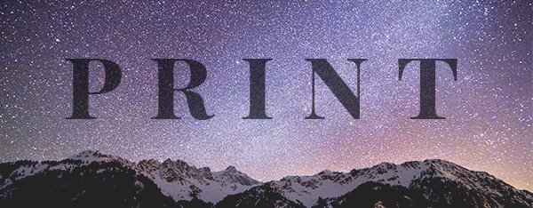

HOME | PIXEL | VECTOR | MOTION | PRINT | CONTACT |The era of space travel and exploration is at an all time high. NASA, SpaceX, and many other companies are aimed towards learning what they can from our well-known universe. Being the one obsessed with space and fully enjoying it, I was happy to have a space theme stretch through this course and I am glad it played out to be a series of postcards, created in Adobe inDesign. The stamp and location at the bottom of the card is a little nod to the future of possible mail service between different planets. Once we become an interplanetary species, we will see a time when we put a stamp on a letter and send it miles and miles into space for another person to enjoy. Cheers to the future of space travel!